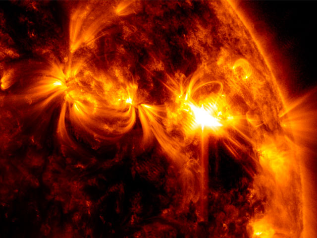
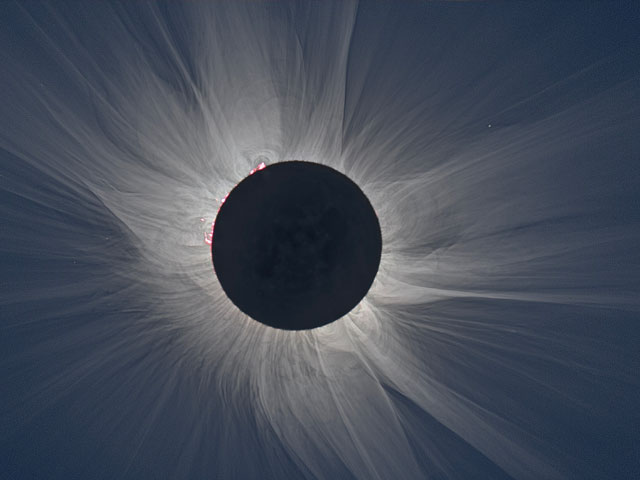
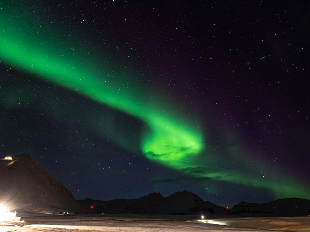
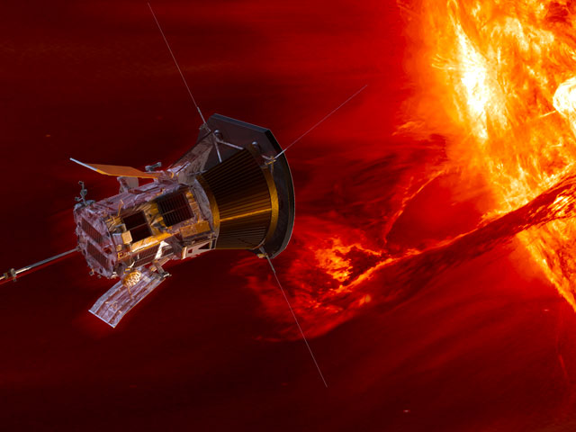

OUR SUN
Our Sun is a 4.5 billion-year-old star – a hot glowing ball of hydrogen and helium at the center of our solar system. The Sun is about 93 million miles (150 million kilometers) from Earth, and without its energy, life as we know it could not exist here on our home planet.
The Sun
is a 4.5 billion-year-old yellow dwarf star – a hot glowing ball of hydrogen and helium – at the center of our solar system. It’s about 93 million miles (150 million kilometers) from Earth and it’s our solar system’s only star. Without the Sun’s energy, life as we know it could not exist on our home planet.
From our vantage point on Earth, the Sun may appear like an unchanging source of light and heat in the sky. But the Sun is a dynamic star, constantly changing and sending energy out into space. The science of studying the Sun and its influence throughout the solar system is called heliophysics.
The Sun is the largest object in our solar system. Its diameter is about 865,000 miles (1.4 million kilometers). Its gravity holds the solar system together, keeping everything from the biggest planets to the smallest bits of debris in orbit around it.
Even though the Sun is the center of our solar system and essential to our survival, it’s only an average star in terms of its size. Stars up to 100 times larger have been found. And many solar systems have more than one star. By studying our Sun, scientists can better understand the workings of distant stars.
The hottest part of the Sun is its core, where temperatures top 27 million °F (15 million °C). The part of the Sun we call its surface – the photosphere – is a relatively cool 10,000 °F (5,500 °C). In one of the Sun’s biggest mysteries, the Sun’s outer atmosphere, the corona, gets hotter the farther it stretches from the surface. The corona reaches up to 3.5 million °F (2 million °C) – much, much hotter than the photosphere.
Quick Facts
- Length of day 25 Earth days at the equator and 36 Earth days at the poles.
- Length of year The Sun doesn't have a "year," per se. But the Sun orbits the center of the Milky Way about every 230 million Earth years, bringing the planets, asteroids, comets, and other objects with it.
- Star type G2 V, yellow dwarf main-sequence star
- urface temperatureS (Photosphere) 10,000 degrees Fahrenheit (5,500 degrees Celsius)
- Corona (solar atmosphere) temperature Up to 3.5 million °F (2 million °C)
- By the numbers: More Facts About Our Sun
The Heliophysics Big Year
global celebration of solar science and the Sun’s influence on Earth and the entire solar system.
The Heliophysics Big Year
Explore heliophysics
-

Heliophysics Info
Learn more about heliophysics and why NASA studies it. The Science Mission Directorate Heliophysics Division studies the nature of the Sun, and how it influences the very nature of space — and, in turn,
-

Eclipses
Join NASA to experience solar eclipses in 2023 and 2024.
-

Heliophysics Citizen Science Projects
Choose a citizen science project where you can do real scientific research and contribute to important scientific discoveries in collaboration with NASA heliophysics scientists.
-

Heliophysics Missions
Find out which NASA missions are exploring our Sun and its influence on the solar system.